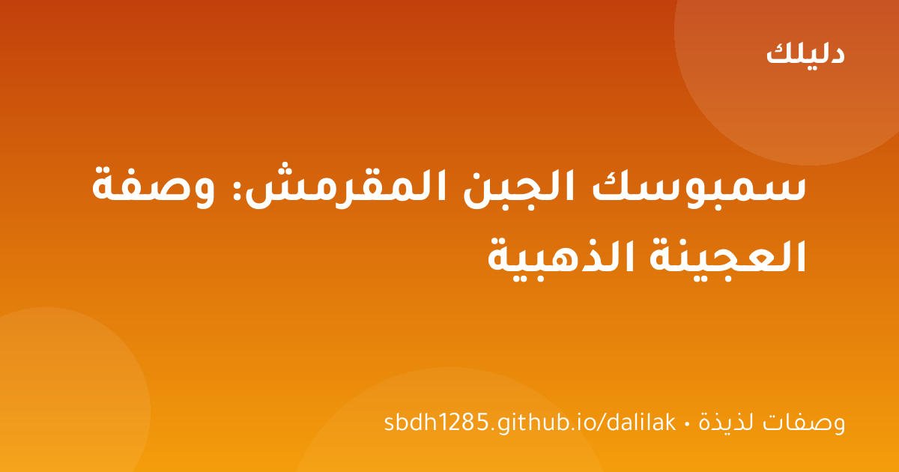

🍽 وصفات لذيذة
مناقيش الزعتر: وصفة بيتية سهلة واقتصادية خطوة بخطوة
مناقيش الزعتر الشهية كما في المخابز — عجينة هشة وخلطة زعتر غنية، بخطوات واضحة ومكونات متوفرة في كل بيت.

السمبوسك ضيف لا يغيب عن موائد رمضان والعزائم، والجبن الذائب داخله هو ما يجعل الجميع يتزاحم عليه. لكن كثيرين يتجنبونه في البيت خوفًا من عجينة جافة أو جبن يتسرب في القلي. اليوم نكشف أسرار السمبوسك الناجح: عجينة مقرمشة ذهبية، حشوة غنية، وطريقة مضمونة.
اخلط الدقيق والملح، ثم أضف الزيت وافركه بالدقيق حتى يصبح كالرمل الناعم. أضف الماء تدريجيًا واعجن حتى تحصل على عجينة طرية متماسكة لا تلتصق. غطِّها واتركها ترتاح 20-30 دقيقة — الراحة تجعل العجينة مطاوعة وتقبل الفرد بدون تمزق.
اخلط الجبن المبشور مع البيضة والزعتر والبقدونس. البيضة سر النجاح: تذوب مع الجبن أثناء القلي فتمنع تسربه من العجينة وتحافظ على حشوة كريمية متجانسة بدل جبن ينساب في الزيت.
افرد العجينة رقيقة جدًا (سمك 2 مليمتر)، وقطّعها دوائر بكوب أو مربعات بالسكين. ضع ملعقة صغيرة من الحشوة في المنتصف، ادهن الأطراف بماء أو بيضة، وأغلقها على شكل مثلث واضغط الأطراف جيدًا بالشوكة لضمان الالتصاق. التضليع بالشوكة ليس للزينة فقط؛ إنه يقفل الحواف ضد التسريب.
ادهن السمبوسك بالزيت أو البيضة المخفوقة، ورتبه في صينية واخبزه في فرن 200 درجة لمدة 15-18 دقيقة حتى يصبح ذهبيًا. النتيجة أقل دهونًا وأكثر قرمشة، وهي مثالية لمن يراقبون وزنهم أو للأطفال.
إما لأن الأطراف لم تُقفل جيدًا، أو لأن الحشوة رطبة جدًا. الحل: اضغط الأطراف بالشوكة، وجفف الجبن من الماء قبل الاستخدام، ولا تفرط في الحشوة.
نعم! رتب السمبوسك غير المقلي في صينية مبطنة بورق زبدة وجمّده، ثم انقله لكيس محكم. يقلى مجمدًا مباشرة (لا تذوّبه وإلا تبلل العجينة).
السمبوسك الناجح وصفة سهلة إذا عرفت الأسرار: عجينة ترتاح، حشوة بالبيضة المانعة للتسرب، أطراف مقفلة بالشوكة، وزيت بدرجة حرارة مضبوطة. جرب هذه الوصفة في أقرب عزيمة، ولن تعود لشراء السمبوسك الجاهز بعدها.
القلي يعطي القرمشة الكلاسيكية لكنه أعلى سعرات؛ الخبز على ورقة زيتية في فرن حار يقدم بديلًا أخف بنفس الحشوة. العجينة الرقيقة تمسك الجبن دون تسرب. أغلق الحواف جيدًا بضغطة شوكة كي لا ينفتح أثناء الطهي.
مناقيش الزعتر الشهية كما في المخابز — عجينة هشة وخلطة زعتر غنية، بخطوات واضحة ومكونات متوفرة في كل بيت.

شوربة العدس — الطبق الدافئ الذي يجمع العائلة: مكونات بسيطة، خطوات واضحة، وأسرار الشيف للحصول على قوام كريمي وطعم لا يقاوم.

لا تملك فرنًا؟ لا مشكلة! كيكة البرتقال الهشة والعطرية تُطهى على الموقد في قدر عادي — وصفة سهلة بمكونات متوفرة.